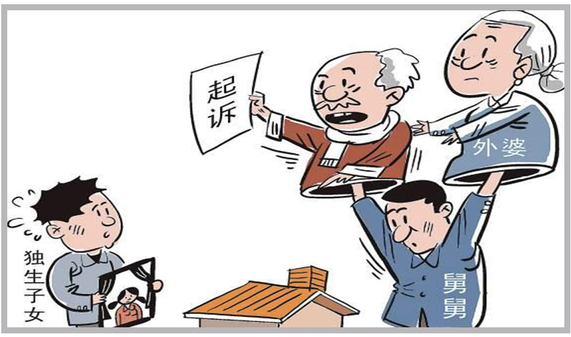

北京市朝阳区的李叔叔，祖籍山西，今年已90岁高龄了。和那个年代大多数的贫困孩童一样，李叔叔也有一个悲惨的童年，母亲在战争时期被日寇残忍杀害，父亲60年代初也死于疫病。五十年代中期，国家大力发展重工业的时候，李叔叔来到北京，并在一家机械制造厂里找到了工作，同时邂逅了一生的伴侣赵阿姨。
赵阿姨和李叔叔是同一车间的工人，两人一同工作学习，日久生情，终于在1957年步入了婚姻的殿堂。两人婚后感情甜蜜，分别于1961年和1963年诞下了一双儿女。女儿李瑶大学毕业后参加工作，经人介绍与建材批发商王某结婚。儿子李远患有先天性小儿麻痹症，常年卧病在床，并于2013年不治身亡。年岁渐长，并且饱尝了白发人送黑发人的痛苦后，两位老人意识到是时候面对死亡，也该考虑考虑身后事了。
两位老人是普通职工家庭，老两口平日的工资除了补贴家用，都拿来给儿子治病了，唯一的财产就是现在居住的这套三居室，是1990年以成本价购买的单位的房改房，由于位置优越，现在房子的市价已不可同日而语了。两位老人已八九十岁了，父母早已离世，儿子去世后，二老以为房子理所应当由女儿继承，不存在任何争议，也无需立遗嘱说明。
近日，李叔叔和赵阿姨来到位于家门口的朝阳区惠新北里16-5的爱传承为老服务中心，听了专业律师的老年法律维权讲座后，恍然大悟，了解到只有一个子女也需要立遗嘱。
原来女儿李瑶和女婿王某婚后关系一直不好，近日更有传闻说王某可能在外与其他女子有不正当关系，女儿女婿的夫妻关系已到了崩溃的边缘，二人随时可能离婚。出于这种顾虑，二老自然不愿意百年之后房产会落入有离婚隐患的女婿手中。思虑再三，二老决定在华夏家和传承遗嘱订立中心立下遗嘱，了却身后事。

根据法律规定，夫妻婚后所得，包括一方继承的遗产，在死者没有明确只给一方的时候，属于夫妻共同财产。
目前年轻人的离婚率居高不下，老人提早立下遗嘱，将财产由自己的子女继承，可以防止财产外流给有离婚隐患的儿媳（或女婿）。
本案中李叔叔和赵阿姨如未立遗嘱，百年之后，女儿若尚未离婚，房产自然属于女儿和女婿的夫妻共同财产。
爱传承为老服务中心的专业律师在了解到二老的真实意愿后，指导老人只要在遗嘱中表明房产由女儿个人继承，不作为其夫妻共同财产继承即可避免这种情况的发生，切实解决了老人的后顾之忧。